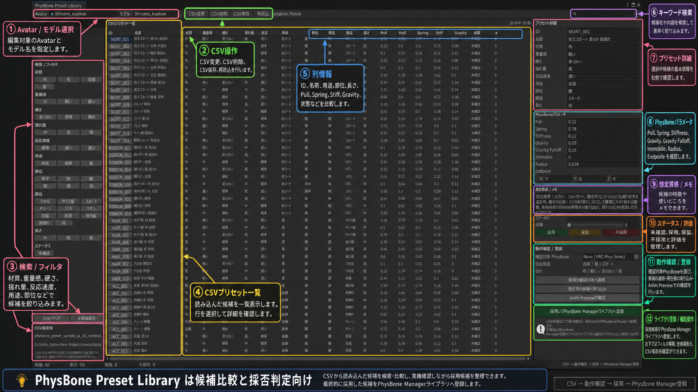

CSV / Preset Evaluation
PhysBone Preset Library
CSVから読み込んだPhysBone候補をタグ・数値で比較し、実機確認しながら採用・保留・不採用を整理するためのライブラリです。

基本操作
- Avatar / モデルを指定。 動作確認に使うAvatarとライブラリ登録先のモデル名を設定します。
- CSVを読み込み。 CSV変更から候補データを読み込み、再読込・保存・削除を管理します。
- フィルタと検索で絞り込み。 材質、重量感、硬さ、揺れ量、反応速度、用途、部位、部品、長さ、ステータスを使えます。
- 一覧で候補を比較。 Pull、Spring、Stiffness、Gravityなどの値を列で比較します。
- 右側で詳細を確認。 候補の説明、パラメータ、メモ、ステータス、評価を確認・編集します。
- 確認対象PhysBoneへ適用。 実際のAvatarで揺れを確認し、Animation Previewへ移動して動作確認できます。
- 採否を決定。 採用・保留・不採用を記録し、採用候補をPhysBone Manager側のPreset Libraryへ登録します。
CSVで扱う主な情報
ID、名前、材質、重量感、硬さ、揺れ量、反応速度、用途、部位、部品、長さ、Pull、Spring、Stiffness、Gravity、Gravity Falloff、Immobile、Radius、Endpoint、ステータス、評価、メモを候補単位で管理します。
この画面は大量の候補を比較して採否を決めるためのライブラリです。採用した候補は本体のPhysBone Presetとして再利用できます。